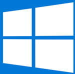
The first version of Microsoft Windows, version 1.0, released in November 1985, lacked a degree of functionality, achieved little popularity and was to compete with Apple's own operating system. Windows 1.0 is not a complete operating system; rather, it extends MS-DOS. Microsoft Windows version 2.0 was released in November 1987 and was slightly more popular than its predecessor. Windows 2.03 (release date January 1988) had changed the OS from tiled windows to overlapping windows. The result of this change led to Apple Computer filing a suit against Microsoft alleging infringement on Apple's copyrights.
Microsoft Windows version 3.0, released in 1990, was the first Microsoft Windows version to achieve broad commercial success, selling 2 million copies in the first six months. It featured improvements to the user interface and to multitasking capabilities. It received a facelift in Windows 3.1, made generally available on March 1, 1992. Windows 3.1 support ended on December 31, 2001.
In July 1993, Microsoft released Windows NT based on a new kernel. Windows NT 3.1 was the first release of Windows NT. NT was considered to be the professional OS and was the first Windows version to utilize preemptive multitasking. Windows NT would later be retooled to also function as a home operating system, with Windows XP.
On August 24, 1995, Microsoft released Windows 95, a new, and major, consumer version that made further changes to the user interface, and also used preemptive multitasking. Windows 95 was designed to replace not only Windows 3.1, but also Windows for Workgroups, and MS-DOS. It was also the first Windows operating system to include object oriented document management and use Plug and Play capabilities. The changes Windows 95 brought to the desktop were revolutionary, as opposed to evolutionary, such as those in Windows 98 and Windows Me. Mainstream support for Windows 95 ended on December 31, 2000 and extended support for Windows 95 ended on December 31, 2001.
Next in the consumer line was Microsoft Windows 98 released on June 25, 1998. It was followed with the release of Windows 98 Second Edition (Windows 98 SE) in 1999. Mainstream support for Windows 98 ended on June 30, 2002 and extended support for Windows 98 ended on July 11, 2006.
As part of its "professional" line, Microsoft released Windows 2000 in February 2000. During 2004 part of the Source Code for Windows 2000 was leaked onto the Internet. This was bad for Microsoft as the same kernel used in Windows 2000 was used in Windows XP. The consumer version following Windows 98 was Windows Me (Windows Millennium Edition). Released in September 2000, Windows Me implemented a number of new technologies for Microsoft: most notably publicized was "Universal Plug and Play". Windows Me was heavily criticized due to slowness, freezes and hardware problems.
In October 2001, Microsoft released Windows XP, a version built on the Windows NT kernel that also retained the consumer-oriented usability of Windows 95 and its successors. This new version was widely praised in computer magazines. It shipped in two distinct editions, "Home" and "Professional",, the former lacking many of the superior security and networking features of the Professional edition. Additionally, the first "Media Center" edition was released in 2002, with an emphasis on support for DVD and TV functionality including program recording and a remote control. Mainstream support for Windows XP ended on April 14, 2009. Extended support will continue until April 8, 2014.
In April 2003, Windows Server 2003 was introduced, replacing the Windows 2000 line of server products with a number of new features and a strong focus on security; this was followed in December 2005 by Windows Server 2003 R2.
On January 30, 2007, Microsoft released Windows Vista. It contains a number of new features, from a redesigned shell and user interface to significant technical changes, with a particular focus on security features. It is available in a number of different editions, and has been subject to some criticism.
On October 22, 2009, Microsoft released Windows 7. Unlike its predecessor, Windows Vista, which introduced a large number of new features, Windows 7 was intended to be a more focused, incremental upgrade to the Windows line, with the goal of being compatible with applications and hardware which Windows Vista was not at the time. Windows 7 has multi-touch support, a redesigned Windows shell with a new taskbar, referred to as the Superbar, a home networking system called HomeGroup, and performance improvements.
On February 29, 2012, Microsoft released Windows 8 Consumer Preview, the beta version of Windows 8, build 8250. For the first time since Windows 95, the Start button is no longer available on the taskbar, though the Start screen is still triggered by clicking the bottom-left corner of the screen and by clicking Start in the Charm. Windows president Steven Sinofsky said more than 100,000 changes had been made since the developer version went public. In the first day of its release, Windows 8 Consumer Preview was downloaded over one million times. Microsoft released the Windows 8 Release Preview, Build 8400 on June 1, 2012. Like the Developer Preview, the Consumer Preview and the Release Preview are both set to expire on January 15, 2013.
Windows 8.1 is a personal computer operating system that was produced by Microsoft and released as part of the Windows NT family of operating systems. It was released to manufacturing on August 27, 2013, and reached general availability on October 17, 2013, about a year after the retail release of its predecessor 8. Windows 8.1 was made available as a free upgrade for retail copies of Windows 8 and Windows RT users via the Windows Store.
On September 30, 2014, Microsoft announced Windows 10 as the successor to Windows 8.1. It was released on July 29, 2015, and addresses shortcomings in the user interface first introduced with Windows 8. Changes on PC include the return of the Start Menu, a virtual desktop system, and the ability to run Windows Store apps within windows on the desktop rather than in full-screen mode. Windows 10 is said to be available to update from qualified Windows 7 with SP1, Windows 8.1 and Windows Phone 8.1 devices from the Get Windows 10 Application (for Windows 7, Windows 8.1) or Windows Update (Windows 7).
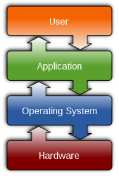
There are similarities and differences between the different operating system interfaces, the Mac OS, and Linux, the Unix, and the BSD, and the Windows 2000, XP, Vista, Windows 7, Windows 8, Windows 8.1 operating systems, and Windows 10 operating systems all have things in common with each other, the functionality of how the different operating systems can relate to one another, an Operating System controls the interaction between the components, memory, hard drives, keyboard, the CPU, a common platform for applications, the user interface.
There are also similarities between the different operating systems, like file management, how you add, delete, or rename files, toolbars, applications, application support, memory management, swap file management, Input and output support for printers, keyboards, hard drives, USB drives, the operating system also needs to utilise configuration and management tools.
The MAC OS easy to use, extremely compatible, relatively fewer security concerns, the disadvantages is that it has less industry support than Windows, and a higher cost of hardware and software, the different versions include:
| Apple Mac OS 8 | Apple Mac OS 9 | Apple Mac OS 10.3 Panther |
| Apple Mac OS 10.4 Tiger | Apple Mac OS 10.5 Leopard | Apple Mac OS 10.6 Snow Leopard |
| Apple Mac OS 10.7 Lion | Apple Mac OS 10.8 Mountain Lion | Apple Mac OS 10.9 Mavericks |
| Apple Mac OS 10.10 Yosemite | Apple Mac OS 10.11 El Capitan | Apple Mac OS 10.12 Sierra |
| Apple Mac OS 10.13 High Sierra | Apple Mac OS 10.14 Mojave | Apple Mac OS 10.15 Catalina |
Linux is a free Unix-compatible software system, and the many distribution versions (Ubuntu, Debian, Red hat/Fedora) the disadvantages to Linux are that there is limited driver support and limited support options.
Microsoft Windows a major market presence with many different versions Windows 2000, Windows XP, Windows Vista, Windows 7, Windows 8, Windows 8.1 and Windows 10 the advantages of Windows is that it has a large industry support, a wide variety of software support, but the disadvantages are that the large install base creates security risk, large hardware support can cause integration problems, the different versions include:
There are 32 bit versions of the operating system which run on 32 bit (x86) CPUs and 64 bit (x64) which run on 64 bit CPUs, the hardware drivers are also specific to the version as well.
To access the command line go to Start, Programs, Accessories, Command Prompt or Start, Run type cmd in the box and Click OK
In Windows 10 if you right click the start button you can select the command prompt from the pop up menu
Using the command line interface
Below uses the ipconfig command to see the computers IP address
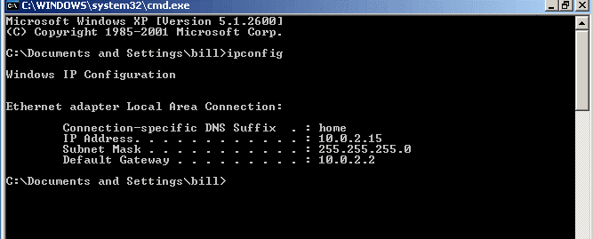
For a more detailed view of a computers IP addresses type ipconfig /all at the command line
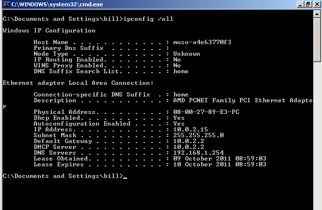
The ping command is used to see if another computer on the network or internet is responding
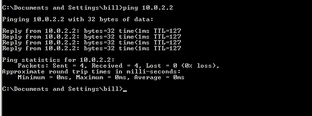
Below are some useful commands
(Files have extensions; Folders are in brackets)
Type c:\cls this command clears the screen
Type c:\cd\ this command changes the directory
Type c:\cd\windows this command changes the directory to the windows directory
Type c:\dir this command opens the windows directory
Type c:\dir/w this command opens the directory in a wider view making it easier to read
Type c:\dir/w/p this command opens the directory in a wider view making it easier to read and opens it one page at a time
Type c:\documents and settings this command opens the documents and settings directory you can also type c:\"documents and settings" to open the directory
Type c:\cd\documents and settings\bill this command changes the directory inside the documents and settings list
Type cd desktop this command opens a new directory in the bill directory, this is used as a shortcut instead of typing the full command that would be c:\cd\documents and settings\bill\desktop
To move out of the directories you can type cd .. This command can be repeated until your back to the c:\> prompt
To get into another drive like the CD-Rom drive to find out what's on the disc you'd type c:\>e: or whatever the drive letter is
You can also press F3 and the last command will reappear
c:\>sol for the solitaire program
c:\>write for the wordpad program
c:\>edit to open the Dos text editor
System The system attribute is assigned to important files so they are not easily erased
Read Read-only means they can only be read by the user, and that no changes can be made to it
Hidden The hidden attribute hides the file
Archive Archive files are used to backup programs
c:\>attrib +h filename the command to hide files
c:\>attrib -h filename the command reveals the files
c:\>dir ah boot.ini opens the boot.ini file
c:\>attrib -s -h -r boot.ini the command alters the files attributes
+r this switch is used to enable the read-only file attribute
-r this switch is used to remove the read-only file attribute
+a this switch is used to enable the archive file attribute
-a this switch is used to remove the archive file attribute
+s this switch is used to enable the system file attribute
-s this switch is used to remove the system file attribute
+h this switch is used to enable the hidden file attribute
-h this switch is used to remove the hidden file attribute
/s this switch is used to apply the specified attrib options to files in the current directory and its subdirectories
/d this switch is used to apply the specified attrib options to files in the current directory
c:\>md directory name or c:\>mkdir directory name to make a new directory
c:\>rd directory name or c:\>rmdir directory name to delete a directory
c:\>dir *.txt This command the * asterix is used as a switch when you're looking for as in this example a text file but are unsure of the files name
c:\>dir *. This command the * asterix is used as a switch when you're looking for as in this example a directory or files without their extension
c:\>dir bill.* This command the * asterix is used as a switch when you're looking for as in this example all directory or files with the prefix of bill regardless of the extension
c:\>dir p*.txt This command the * asterix is used as a switch when you're looking for as in this example all text files with the prefix of p
c:\>del file name or c:\>erase to delete a file
e:\>copy file name c:\ copies a file from the e drive to the c drive to check that the file was copied successfully type c:\>dir you can also use wildcards such as e:\>copy *.doc c:\ when your need to copy multiple files or documents
The xcopy command is used when you want to copy files folders and sub-directories
e:\>move file name c:\ moves a file from the e drive to the c drive, the move command is similar to the copy command but it deletes the original file
By typing msconfig in the run box or at the command line opens up the system configuration screen
MSConfig (officially called System Configuration in Windows Vista and Windows 7 or Microsoft System Configuration Utility in previous operating systems) it is a system utility to troubleshoot the Microsoft Windows startup process. It can disable or re-enable software, device drivers and Windows services that run at startup, or change boot parameters.
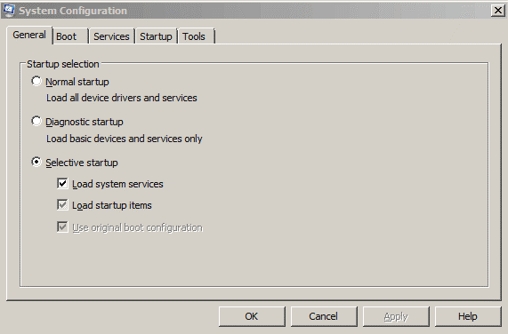
Useful web sites
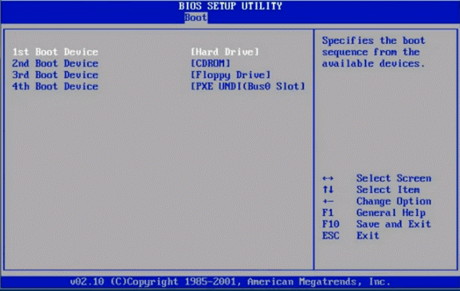
Even before Windows starts, there are many options during the boot process. The BIOS can be configured to boot from the floppy disk, the hard disk, a USB drive, CD:DVD drives or network adapters PXE (Preboot eXecution Environment)
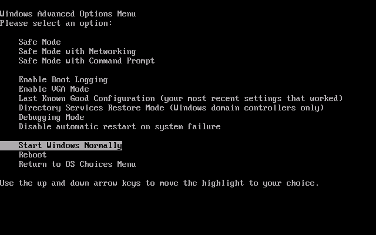
Safe mode typically provides access to utility and diagnostic programs so a user can troubleshoot what is preventing the operating system from working normally. Safe mode is intended for maintaining the computer, not functionality, and provides minimal access to features. Microsoft Windows' safe mode is accessed by pressing the F8 key as the operating system boots.
If your computer will not start, you might be able to start it in safe mode. In safe mode, Windows uses default settings (VGA monitor, Microsoft mouse driver, no network connections, and the minimum device drivers required to start Windows).
If your computer will not start after you install new software, you might be able to start it with minimal services in safe mode and then change your computer settings or remove the newly installed software that is causing the problem. You can reinstall the service pack or the entire operating system, if necessary.
If a symptom does not reappear when you start in safe mode, you can eliminate the default settings and minimum device drivers as possible causes of the computer's inability to start.
The startup options are:
Safe Mode |
| Starts using only basic files and drivers (mouse,; except serial mice; monitor; keyboard; mass storage; base video; default system services; and no network connections). If your computer does not start successfully using safe mode, you might need to use the Recovery Console feature to repair your system. |
Safe Mode with Networking |
| Starts using only basic files and drivers, and network connections. |
Safe Mode with Command Prompt |
| Starts using only basic files and drivers. After logging on, the command prompt is displayed instead of the Windows graphical interface. |
Enable Boot Logging |
| Starts while logging all the drivers and services that were loaded (or not loaded) by the system to a file. This file is called ntbtlog.txt and it is located in the %windir% directory. Safe Mode, Safe Mode with Networking, and Safe Mode with Command Prompt add to the boot log a list of all the drivers and services that are loaded. The boot log is useful in determining the exact cause of system startup problems. |
Enable VGA Mode |
| Starts using the basic VGA driver. This mode is useful when you have installed a new driver for your video card that is causing Windows not to start properly. The basic video driver is always used when you start in Safe Mode (either Safe Mode, Safe Mode with Networking, or Safe Mode with Command Prompt). |
Last Known Good Configuration |
| Starts using the registry information and drivers that Windows saved at the last shutdown. Any changes made since the last successful startup will be lost. Use Last Known Good Configuration only in cases of incorrect configuration. It does not solve problems caused by corrupted or missing drivers or files. |
Directory Service Restore Mode |
| This is for the server operating system and is only used in restoring the SYSVOL directory and the Active Directory directory service on a domain controller. |
Debugging Mode |
| Starts while sending debug information through a serial cable to another computer. If you are using, or have used, Remote Installation Services to install Windows on your computer, you might see additional options related to restoring or recovering your system using Remote Install Services. |
With Windows 2000 to restore your computer to an original setting you would use the Emergency Repair Disk. The facility in Windows XP Professional is the Automated System Recovery, ERD and ASR are referenced during the setup process which prompt you to repair your system, you should also perform a complete backup of your system and any important files anyway, but remember ERD and ASR do not backup your data.
To create an ASR disk go to start, all programs, accessories, and select backup from the menu, this opens the backup utility, here you can select the automated system recovery wizard.
To use the recovery disk you will need to insert the your original installation disk and press F2 to run automated system recovery, then you will need to insert your automated system recovery disk and re-install all the settings that were backup to that disk.
Windows Vista uses Windows Backup and Restore in Windows Vista you would go to start, all programs, maintenance, backup and restore center which opens up the backup and restore wizard to make backups of files or backing up the system or to restore your system to a previous backup.
To repair Windows Vista insert the installation disk, you are first prompted to select a language, time and currency format and the keyboard click next and instead of installing Vista on the next screen select repair your computer, select the operating system and the screen below opens offering the various choices.
To repair Windows XP insert the installation disk and at the welcome to setup screen select to repair a Windows XP installation using Recovery Console, press R. On the next screen select the operating system and press enter, you will be required to type in an administrator password to enter the setup to repair the computer.
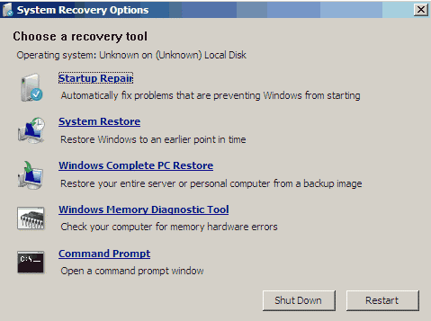
Boot errors, usually the error messages are specific; try the recovery console to troubleshoot these problems. Typical error messages are.
| Invalid partition table |
| Error loading operating system |
| Missing operating system |
| Operating system not found |
You'll need the installation media and the administrator's password Make sure the boot option in the BIOS is set to the CD/DVD drive, insert the installation CD and after Windows installs the basic setup files; you will be prompted to install the operating system or to repair the operating system using the recovery console by pressing r.
After pressing r the next screen will give you a list of all the Windows installations to be found on the drive (if there's more than one operating system you will need to select the number of the operating system you're having trouble booting) after making your selection and typing in the number press enter, you'll next be prompted for the administrator's password type that in and press enter.
At the command line write fixboot and the drive of the boot sector such as C:\WINDOWS>fixboot c:
Then try re-booting the computer to see if the problem is solved.
If any of the boot files have been deleted from the drive by mistake. Typical error messages are.
| A disk read error occurred |
| NTLDR is missing |
| NTLDR is compressed |
You'll need the installation media and the administrator's password. Use the recovery console to access the CD drive with the installation media, you will need to change the directory to that of the CD drive by using C:\ >d: then type D:\>dir then change the directory by using the command D:\>cd i386\ntldr and copy the file using the command D:\i386>copy ntldr c:\ press enter this should copy the ntldr file to the C drive.
Useful web sites
Before we do any tweaking it is very important to do the following
Make sure that your PC is clean of spy ware. There are lots of free programs on the web that will do the job efficiently
To check your PC for viruses. You can download free Anti Virus by AVG, Microsoft's Security Essentials is also free to download
www.safer-networking.org-Spybot
Microsoft's Security Essentials
Always keep Windows up to date with all the latest security patches, updates, and service packs, to do this go to Start/All Programs/Windows Update this can also be set to do this automatically
Run the Disk Cleanup utility regularly to clean out all the junk files left behind from surfing the internet, temporary internet file and any other files left in the Recycle Bin, this can be accessed through Start/All Programs/Accessories/System Tools or from My Computer/Right click on the drive you want to clean select Properties and from the General tab click on the Disk Cleanup button.
To clean the Registry try CCleaner by Piriform this is a freeware utility you can download from www.ccleaner.com always be careful when cleaning the Registry you don't want to delete something that is needed in the Registry so always use with caution
You can also use the System configuration utility tool to sort out any problems with start-up programs this is accessed by going to Start/Run/and type in msconfig in the dialogue box.
If you need to see your system information for information about hardware resources, components this can be accessed by going to Start/Run/and type in msinfo32 in the dialogue box, it can also be accessed by going to Start/All Programs/Accessories/System Tools/System Information.
As you use your hard drive, it can develop bad sectors. Bad sectors slow down hard disk performance and sometimes make data writing (such as file saving) difficult, or even impossible. The Error Checking utility scans the hard drive for bad sectors, and scans for file system errors to see whether certain files or folders are misplaced. If you use your computer daily, you should try to run this utility weekly or monthly to help prevent data loss. To run the Error Checking utility.
Important: Be sure to close all files before running the Error-Checking utility.
It's important is to defrag your HDD once in a while. I usually do it once a month if you're heavy PC user like me. By running a defrag once a month you will extend the life of your Hard Drive as well as speed up the access to applications
To run a defrag
Defragging your Hard Drive might take a while depending on how big your Hard Drive is
Many freeware and commercial software programs have a habit of setting themselves up to run automatically upon Windows start-up. This can contribute to the gradual decline in start-up speed that most Windows 7 systems (and Windows PCs in general) experience. Also, having programs that you only use selectively, or not at all, load automatically is a waste of system resources that could be better used for other things. To top it off, many internets nasties such as spyware programs, viruses and Trojan horses will install themselves into one of the automatic start locations on your system in order to make sure that they are run on start-up. So the point is take a look at what is currently running every time you load you're PC, and disable what you don't need or can't identify.
It is really important to do some maintenance on the regular basis if you want get lot out of surfing the web. Depending on how much time you spend on surfing it is a good idea to clean your DNS cache once in a while. I suggest doing this every month if you are using internet more than two hours a day. When you visit a website, Windows tries to speed things up by placing the DNS information about that site, into a DNS cache on your PC. This is OK until there are problems with outside networks (WAN), DNS servers or even the website!
DNS Windows cache stores BOTH negative and positive entries. The positive entries are those that the DNS query was correct and you could connect to the website. Negative entries are those where the DNS query failed and you could not connect to the website.
A problem can arise here because if the DNS cache holds a negative entry and the website you want to view is now OK to view, Windows will still give you a DNS error!
To flush those DNS entries
Understanding hardware and software system layers in a PC, if your troubleshooting a problem in a PC you need to figure out if it's hardware or software related, if it's a software problem you would reload the software, changing the drivers or the configurations of the software, if it's a hardware related problem you would replace the hardware that's defected, a motherboard, a disk drive, a video card, cables etc.
There are four layers in a PC the hardware, the BIOS, the operating system and the application, the application program communicates with the operating system through a standard interface known as the API (Application program interface) this could be a program such as Microsoft word which then translates the data in the word program via the operating system to the BIOS (Basic input output system) layer which in turn translates the data to the systems hardware where the word document can be saved to the hard drive in its binary data form.
API (Application program interface)
BIOS (Basic input output system)
Exploring the BIOS and drivers in a PC, If you think of BIOS as being all of the drivers for all of the hardware in a system, you have keyboard drivers, hard disk driver's, video drivers, drivers for your I/O ports so all of the drivers make up the BIOS, the BIOS is the interface between the hardware and the operating system, although the hardware may be different from system to system you need to have the correct drivers for each individual piece of hardware to communicate properly with the operating system so you need to make sure the drivers are the correct ones for the particular operating system in use on the system for example the drivers would be different for Windows 2000 as for operating systems such as Windows XP or Vista even though they're all versions of Windows operating systems.
The ROM BIOS, there are three major BIOS manufacturers AMI, Phoenix and Award, the main difference between RAM and ROM is that RAM is volatile so when the power is cut from the motherboard you lose the data and with ROM which is non-volatile the data remains in the memory. The fundamental difference between BIOS and CMOS is that BIOS is a set of instructions or code used to communicate with system devices and CMOS is an inventory list of the configurations and settings for the system devices.
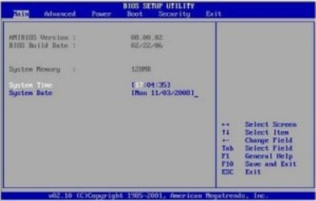
There are four things in the motherboard ROM chip
CMOS (Complimentary metal-oxide semiconductor)
The motherboard ROM chip stores the BIOS program but the settings that can be saved in the BIOS is stored on the NVRAM/RTC (Non-volatile RAM/ real time clock) chip which uses the CMOS battery to give power to the NVRAM/RTC chip, it's recommended that you make a note of all the configurations in the BIOS settings especially the hard drive settings in case of the CMOS battery failure (An indication that the battery might need changing is when the clock starts losing time) you might need to reconfigure these settings in order to boot up the computer to the hard drive.
Masked ROMs these chips have the BIOS data etched into the chip using a photolithographic process and are not used anymore.
PROM programmable ROM the BIOS data is burnt into the chip by blowing a fuse; the chips are all ones or are holding a charge before the burning process which then creates the zeros on the chip when the fuse is blown.
EPROM erasable programmable ROM these chips can be erased and reprogrammed by using ultra violet light which is exposed to the chip through a quartz crystal window on the chip.
EEPROM electrical erasable programmable ROM or flash ROM the BIOS data can be downloaded from the manufacturer's web site and the BIOS update can then be performed through the computer.
EPROM erasable programmable ROM
EEPROM electrical erasable programmable ROM
BIOS is firmware that is stored on a ROM chip in the same process that data is stored in RAM but it differs from RAM in that it is non-volatile it can't be erased when the power is switched off the data remains in the chip, the old ROM chips where non-reprogrammable and the only way to change the BIOS would be to change the chip, but modern BIOS is now reprogrammable and known as flash ROM and can be altered electronically. once you've entered the CMOS setup program you can access various screens to alter and change configurations, the main screen shows processor information, the time and date, language settings, the advanced settings menu allows you to change floppy drives, peripheral configurations, the security settings menu allows you to set a password to enter the CMOS, the boot options menu allows you to change the boot order. Many expansion cards have their own BIOS built into them to assist the system BIOS how to communicate with then this is known as an option ROM chip. But most hardware comes with software on a CD-ROM called an installation disc that loads the device drivers which are the BIOS updates for a particular device be it the video card, sound card, network card or external devices such as the printer, cameras etc.
The system ROM contains the POST or power on self test a program that checks out the computer every time it boots up.
On most modern motherboards there are jumpers that can be set with a shunt to clear the CMOS, errors are indicated by beep codes, and text errors can appear on the monitor giving you an indication of the problem, a diagnostic card called a Post card can be used when checking for problems.
Understanding hardware and software system layers in a PC, if your troubleshooting a problem in a PC you need to figure out if it's hardware or software related, if it's a software problem you would reload the software, changing the drivers or the configurations of the software, if it's a hardware related problem you would replace the hardware that's defected, a motherboard, a disk drive, a video card, cables etc.
There are four layers in a PC the hardware, the BIOS, the operating system and the application, the application program communicates with the operating system through a standard interface known as the API (Application program interface) this could be a program such as Microsoft word which then translates the data in the word program via the operating system to the BIOS (Basic input output system) layer which in turn translates the data to the systems hardware where the word document can be saved to the hard drive in its binary data form.
API (Application program interface)
BIOS (Basic input output system)
Exploring the BIOS and drivers in a PC, If you think of BIOS as being all of the drivers for all of the hardware in a system, you have keyboard drivers, hard disk driver's, video drivers, drivers for your I/O ports so all of the drivers make up the BIOS, the BIOS is the interface between the hardware and the operating system, although the hardware may be different from system to system you need to have the correct drivers for each individual piece of hardware to communicate properly with the operating system so you need to make sure the drivers are the correct ones for the particular operating system in use on the system for example the drivers would be different for Windows 2000 as for operating systems such as Windows XP or Vista even though they're all versions of Windows operating systems.
The ROM BIOS, there are three major BIOS manufacturers AMI, Phoenix and Award, the main difference between RAM and ROM is that RAM is volatile so when the power is cut from the motherboard you lose the data and with ROM which is non-volatile the data remains in the memory. The fundamental difference between BIOS and CMOS is that BIOS is a set of instructions or code used to communicate with system devices and CMOS is an inventory list of the configurations and settings for the system devices.
There are four things in the motherboard ROM chip
CMOS (Complimentary metal-oxide semiconductor)
The motherboard ROM chip stores the BIOS program but the settings that can be saved in the BIOS is stored on the NVRAM/RTC (Non-volatile RAM/ real time clock) chip which uses the CMOS battery to give power to the NVRAM/RTC chip, it's recommended that you make a note of all the configurations in the BIOS settings especially the hard drive settings in case of the CMOS battery failure (An indication that the battery might need changing is when the clock starts losing time) you might need to reconfigure these settings in order to boot up the computer to the hard drive.
Masked ROMs these chips have the BIOS data etched into the chip using a photolithographic process and are not used anymore.
PROM programmable ROM the BIOS data is burnt into the chip by blowing a fuse; the chips are all ones or are holding a charge before the burning process which then creates the zeros on the chip when the fuse is blown.
EPROM erasable programmable ROM these chips can be erased and reprogrammed by using ultra violet light which is exposed to the chip through a quartz crystal window on the chip.
EEPROM electrical erasable programmable ROM or flash ROM the BIOS data can be downloaded from the manufacturer's web site and the BIOS update can then be performed through the computer.
EPROM erasable programmable ROM
EEPROM electrical erasable programmable ROM
BIOS is firmware that is stored on a ROM chip in the same process that data is stored in RAM but it differs from RAM in that it is non-volatile it can't be erased when the power is switched off the data remains in the chip, the old ROM chips where non-reprogrammable and the only way to change the BIOS would be to change the chip, but modern BIOS is now reprogrammable and known as flash ROM and can be altered electronically. once you've entered the CMOS setup program you can access various screens to alter and change configurations, the main screen shows processor information, the time and date, language settings, the advanced settings menu allows you to change floppy drives, peripheral configurations, the security settings menu allows you to set a password to enter the CMOS, the boot options menu allows you to change the boot order. Many expansion cards have their own BIOS built into them to assist the system BIOS how to communicate with then this is known as an option ROM chip. But most hardware comes with software on a CD-ROM called an installation disc that loads the device drivers which are the BIOS updates for a particular device be it the video card, sound card, network card or external devices such as the printer, cameras etc.
The system ROM contains the POST or power on self test a program that checks out the computer every time it boots up.
On most modern motherboards there are jumpers that can be set with a shunt to clear the CMOS, errors are indicated by beep codes, and text errors can appear on the monitor giving you an indication of the problem, a diagnostic card called a Post card can be used when checking for problems.
Before any data can be written to the partition of a hard drive, it must be formatted; operating systems expect data to be written in a particular format. If you have multiple operating systems running on a computer you would choose a file system that would be compatible to all of them.
FAT (File Allocation Table) was one of the first PC-based file systems, FAT32 introduced with Windows 2000 had larger volume sizes of two terabytes and a maximum file size of four gigabytes.
NTFS (New Technology File System) which is the file system used with the Windows NT, 2000, XP, Server 2003, Server 2008, Vista and Windows 7 operating systems. The NTFS file system brought about extensive improvements with file compression, encryption, symbolic links, large file support, security, quotas and recoverability.
NTFS (New Technology File System)
Files are organised into directories or folders and these directories can be nested inside each other making it easy for organising documents. Some folders are best left alone system folder containing files related to the operating system or application folders which contain files related to the programs you've installed on the computer.
Volumes are designated with a drive letter and a colon starting at C: and following the alphabet, drives A and B where designated to floppy disk drives.
From the command line the backslash \ is used to designate directories and network shares such as C:\User\Bill\Documents, and the forward slash / is used for everything else, you can also create new folders from the command line using the mkdir or md commands, folders can be created in Windows explorer by right clicking in a directory and selecting new and then the folder option from the dropdown menu,when naming your files or folder there is a maximum of 255 characters and the file is in two parts which include the file name and the extension, older operating systems used 8.3 file name so you only use eight characters for the file name and three for the extension, and you can't use characters such as | / ? * < " : > + \ in the file name, the text after the dot (extension) is important this indicates what file type it is .txt for a text file .mov for a movie file etc.
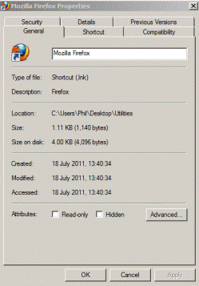
Individual files can be given their own attributes such as read only, meaning that the files contents can't be changed, archive which designates a modified file since the last backup, system files are normally hidden as they are files that relate to the operating system, a file can also be given the hidden attribute if you want to hide files yourself, NTFS also includes some extended file attributes such as compression and encryption.
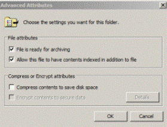
Files and folder can be given individual permissions such as full control, modify, read and execute, read, write, list folder contents. In Windows XP to change the permissions of a file you need to select tools from the menu bar in windows explorer and then select folder options from the dropdown menu then select the view tab and then scroll down to the bottom and uncheck Use simple file sharing, then if you right click on the file or folder you want to assign permission to select properties and then the security tab and then you can decide who has permission and what permissions by ticking the permission boxes that you require.
Computer management is a good starting point to access events, user accounts, storage management and services to access Computer Management go to Control Panel - Administrative Tools - Computer Management
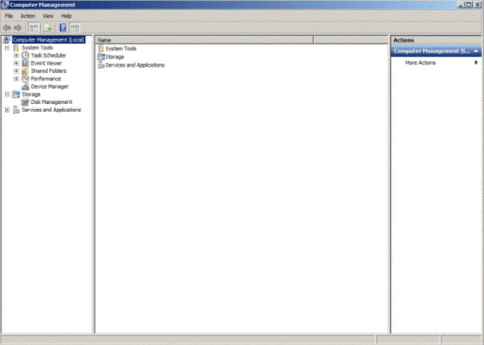
The event viewer will show you application errors, security problems BSOD messages, if drivers loaded properly and give information of any errors that have occurred, a good place to start troubleshooting to access the Event Viewer go to Control Panel - Administrative Tools - Event Viewer
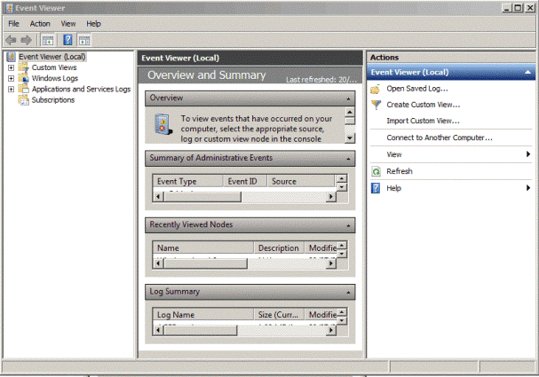
Services can reveal dependencies between applications so one service can affect multiple applications, this is useful when troubleshooting the start-up process to access the services menu go to Control Panel - Administrative Tools - Services
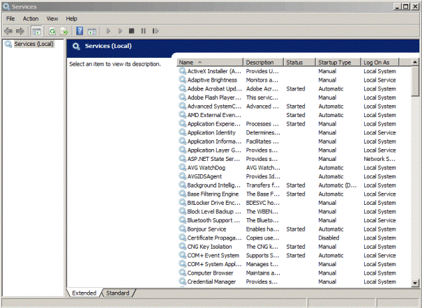
By right clicking on a service and selecting properties a menu opens up where you can change the way the service starts up, automatic (Delayed start), automatic, manual or disabled, the recovery section can be set to re-start after the first or second failure or to take no action, the dependencies section shows you what other dependencies the service has etc
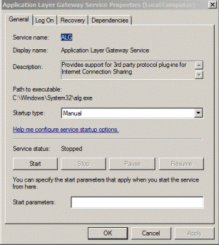
To access the Performance Monitor go to Control Panel - Administrative Tools - Performance Monitor
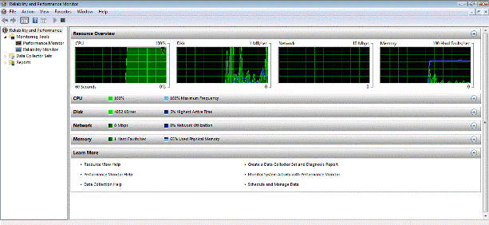
You can use Windows Performance Monitor to examine how programs you run affect your computer's performance, both in real time and by collecting log data for later analysis
Windows Performance Monitor uses performance counters, event trace data, and configuration information, which can be combined into Data Collector Sets
Performance counters are measurements of system state or activity. They can be included in the operating system or can be part of individual applications. Windows Performance Monitor requests the current value of performance counters at specified time intervals
Event trace data is collected from trace providers, which are components of the operating system or of individual applications that report actions or events. Output from multiple trace providers can be combined into a trace session
Configuration information is collected from key values in the Windows registry. Windows Performance Monitor can record the value of a registry key at a specified time or interval as part of a log file
The Device Manager is a Control Panel applet in Microsoft Windows operating systems. It allows users to view and control the hardware attached to the computer. When a piece of hardware is not working, the offending hardware is highlighted for the user to deal with.
Device Manager was introduced with Windows 95 and later added to Windows 2000. In NT-based versions, it is included as a Microsoft Management Console snap-in.
The operating system doesn't know how to talk directly to most hardware so device drivers are needed to assist this process, device drivers are hardware and operating system specific so Windows XP device drivers won't work with Windows Vista or Windows 7 and vice a versa
You need to make sure that the device drivers are up to date to do this you will need to have Administrator access
To access the device manager got to Control Panel - Device Manager
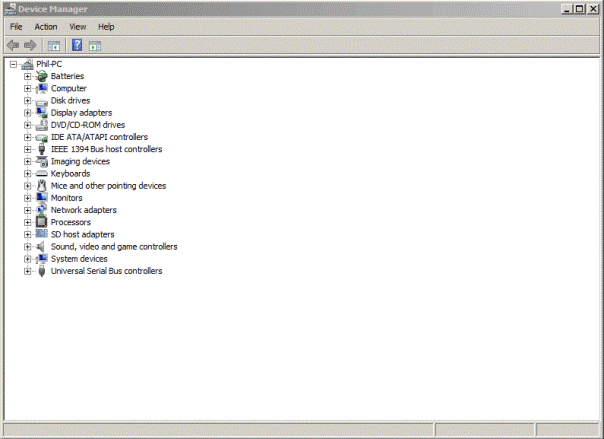
By right clicking on the devices and selecting properties from the drop down menu will open up the devices properties menu
For each device, users can supply device drivers for the hardware, enable or disable devices, tell Windows to ignore malfunctioning devices or to view other technical properties
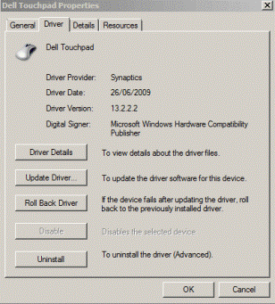
A disabled device has either been manually disabled by a user or by some way of error. In Windows 7, this is denoted by a grey downward pointing arrow in the lower right-hand corner of the device's icon, or a red X in some older versions of Microsoft Windows.
Hardware may not work properly for a multitude of reasons. If Windows recognizes a problem with a device, it is denoted by a black exclamation point (!) on a yellow triangle in the lower right-hand corner of the device's icon.
Hardware may not be recognized if it is not installed properly or not compatible with your system. This is denoted by a yellow question mark in place of the device's icon.
A blue "i" on a white field in the lower right-hand corner of a Device's icon indicates that the Use automatic settings feature is not selected for the device and that the resource was manually selected. Note that this does not indicate a problem or disabled state.